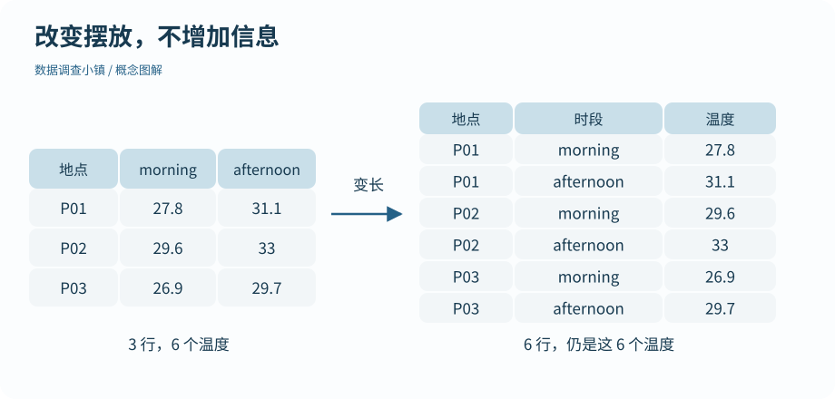

第 17 节 · 整理工坊
一张表可以换个形状
上午和下午，应该放在列名里还是一列里？
进行宽长转换，识别转换键与原始信息是否保留。
本节目录
运行位置：打开练习包内的 r-lab.Rproj，在项目根目录运行本节脚本。安装与准备见第 02—04 节；第 13 节说明扩展包。
同一份信息，两种摆放方式
地点资料卡可能把上午温度和下午温度排成两列。比较一个地点时很直观；但要按时段分组、画早晚颜色不同的图，把时段放进一列通常更顺手。
整洁数据强调变量、观察和表格结构之间的对应。这里的变量是地点、时段、温度，因此转成 site_id、period、temperature_c 三列，可以把后续操作写得一致。
图解 · 改变摆放，不增加信息

左边三地点各有两个时段，右边变成六条地点与时段组合。六个温度值保持对应。
放大查看 ↗ 保存 SVG ↓# 数据调查小镇 · 第 17 节
# 在 r-lab 项目根目录运行；输出只写入 results。
suppressPackageStartupMessages(library(tidyr))
wide <- read.csv("data/temperatures_wide.csv", stringsAsFactors = FALSE)
long <- pivot_longer(wide, cols = c(morning, afternoon), names_to = "period", values_to = "temperature_c")
print(as.data.frame(long))
back <- pivot_wider(long, names_from = period, values_from = temperature_c)
print(as.data.frame(back))site_id period temperature_c 1 P01 morning 27.8 2 P01 afternoon 31.1 3 P02 morning 29.6 4 P02 afternoon 33.0 5 P03 morning 26.9 6 P03 afternoon 29.7 site_id morning afternoon 1 P01 27.8 31.1 2 P02 29.6 33.0 3 P03 26.9 29.7
变长发生了什么
pivot_longer() 将 morning、afternoon 两列的名字放入 period，把对应值放入 temperature_c。三行两次测量变成六行，每行表示一个地点在一个时段的测量。
行数增加并不是增加了独立观测信息；原有六个温度只是改变摆放方式。与上一节重复键导致的行数膨胀相比，这次增加是预先设计好的，因此我们能明确解释每一行来自哪里。
再变宽，需要唯一的格子地址
pivot_wider() 用时段作为列名，把温度放回去。要顺利还原，一个“地点＋时段”组合应指向一个值。若同一组合有两次不同测量，必须先保留额外的日期或测量编号，或者明确采用何种汇总。
不能为了消掉警告就随便取平均。平均会改变数据的信息粒度，必须符合你的分析问题。真正判断转换是否正确，要比较键、值和记录含义，而不只看行数。
先处理小表，再推广
本节单独提供只有三行的小文件，便于逐格追踪。它是模拟示意表，并非从原始观察中截取后仍保持所有上下文。先把这张表还原一遍，再尝试为它增加一个新的时段。
宽表与长表不是“好”和“坏”的固定标签。记录、阅读、建模和绘图可能需要不同结构；能有依据地转换，才是这节要掌握的方法。
动手试试
多一个时段
若三处地点各有上午、下午、傍晚三列温度，转成长表会得到多少行？
给我一点提示
每个地点对应三个时段，前提是每个格子都被保留。
查看参考解法与解释
得到 9 行。即使某格是 NA，默认 pivot_longer() 也会保留对应记录；主动删除缺失则会改变行数，需要说明。
带走这一点
下一节继续沿地图向前。也可以先修改本节例子中的一个值，解释输出为什么变化。
检查一下理解
三行两列温度转成六行，说明收集了更多独立样本吗？
查看解释
观察单位由记录设计决定，变换表形不创造新测量。